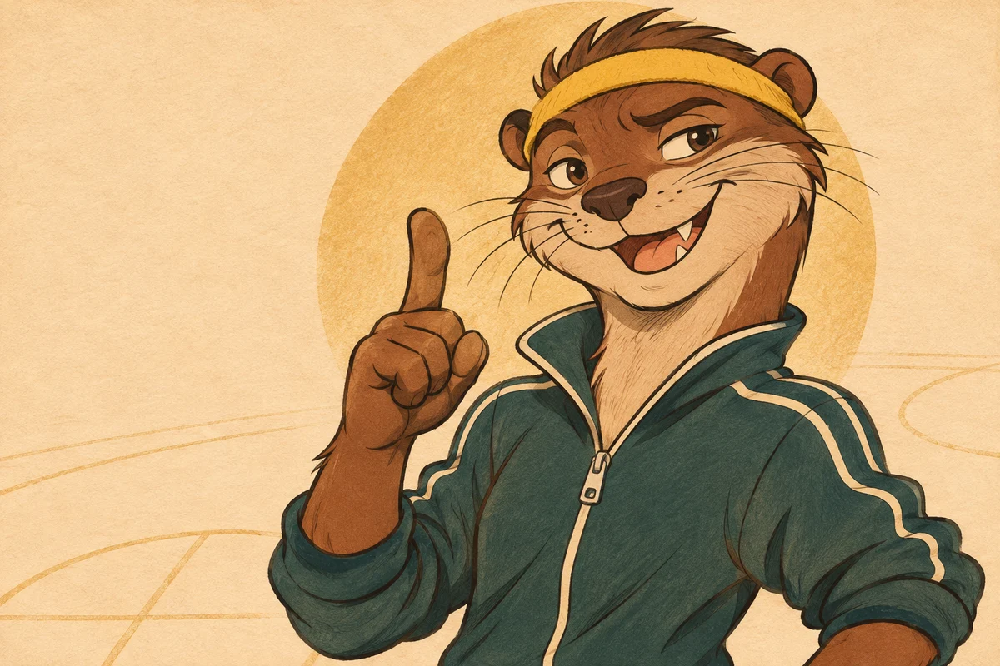
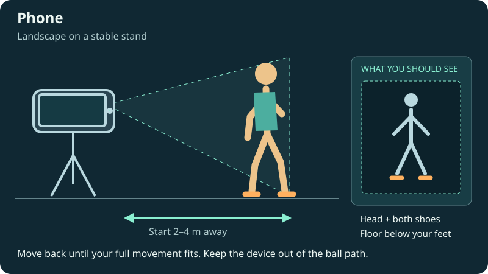

Find your
rhythm.
Bring a ball. I’ll watch the crossings.
You decide what feels worth repeating.
Your practice journal
Rounds and reflections stay on this device.
Crossover gates
Place two markers a step apart. Cross the ball from one side to the other at a pace you can repeat.
See the six-second gate pattern
Camera tracking is experimental. It follows a color you select. It can lose the ball or follow a similar background color. Counts describe gate crossings, not technique. Timer practice works without a camera.
Coach Otter
“Try one slow crossing and one quick one. Which would you take into a game?”
Your round
Pick a pace you can sustain.
Demo crossings 0
Round complete.
Set up your camera.
Choose your device. These are starting positions; the live preview decides the final distance.

Use landscape orientation on a stable stand. For foot tracking, start with the lens around knee to hip height. Keep the screen facing you so you can check framing.
1. Make room. Clear the practice area. Keep the device secure and outside the path of the ball.
2. Check the frame. See your head, both shoes, floor below your feet, and both ends of your movement. Move back if anything gets cut off.
3. Light the player. Face the brighter light. Avoid a bright window behind you and clothing that blends into the floor.
4. Test the tracking. For the ball, check that the ring follows it. For feet, wait for both foot outlines, stand still to calibrate, then take one slow step out and back.
For ball-gate practice, adjust the tilt until the ball enters both boxes. For footwork, keep your legs and both shoes visible throughout. Moving the camera means calibrating again.
Open the footwork trackerMovement replay
Review a camera round or explore a sample. Replay analysis runs on this device. Video, positions and reflections stay in your browser.